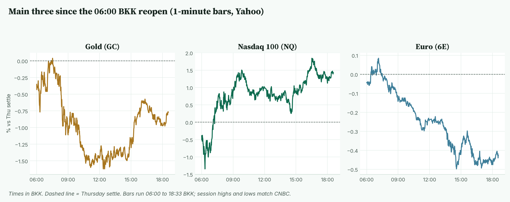
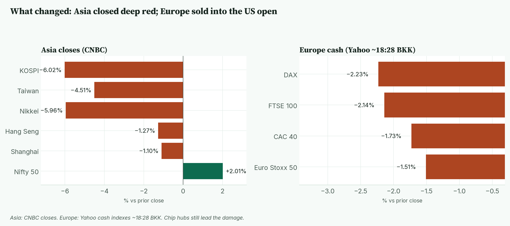
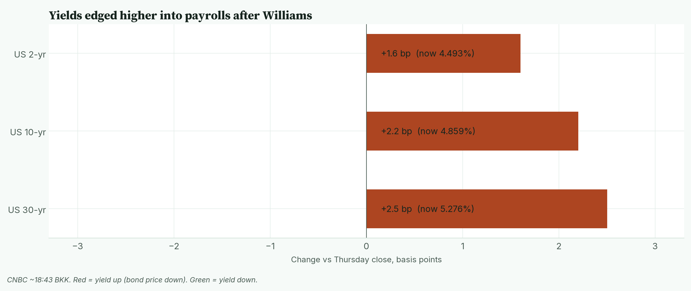
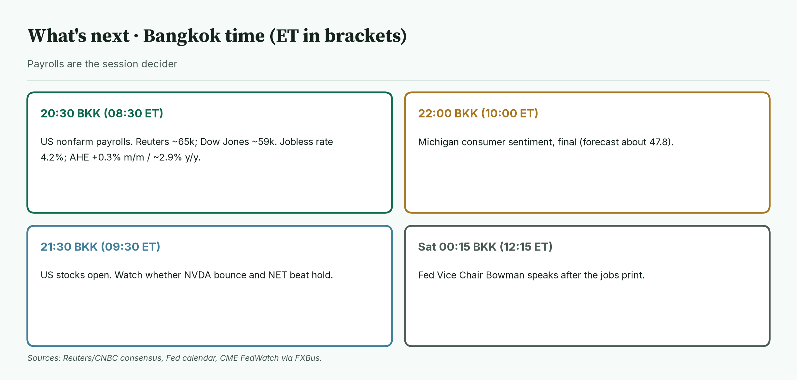
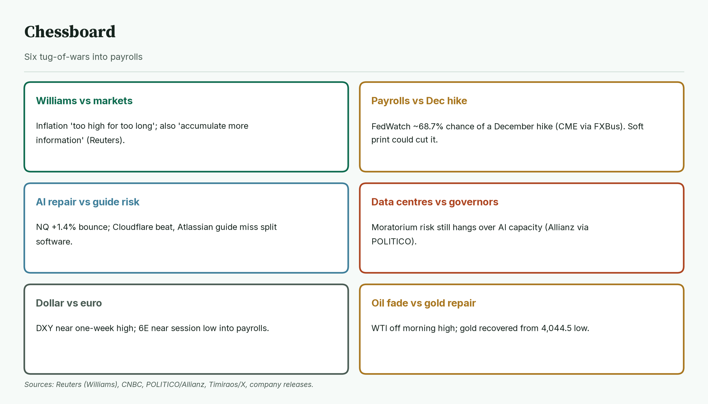
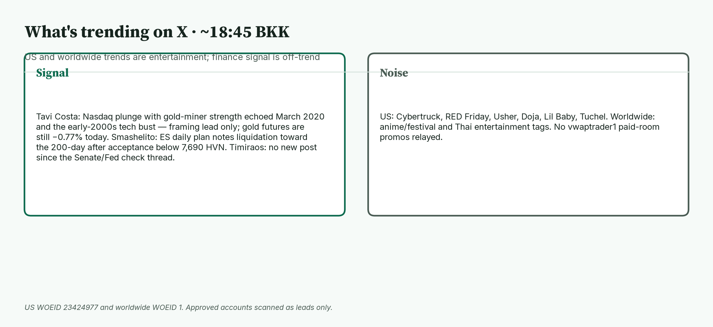

April · Market Intel, pre-NY · Fri Nov 6, 2026 · ~18:45 BKK / ~06:45 New York
Headline: gold futures recovered to 4,081.8 (−0.77%) after a deep Asian low. Nasdaq futures extended their bounce to 27,133.75 (+1.43%). The euro slid to 1.11935 (−0.43%) as the dollar hit a one-week high. US payrolls at 20:30 BKK are the session decider.
So what: October nonfarm payrolls land in about two hours. A soft print could cut December Fed hike odds from about 68.7%; a hot print does the opposite for gold, the dollar and Nasdaq futures.
 Caption: Moves versus Thursday's settle or close, at 18:33 to 18:43 BKK. Nasdaq leads the repair; gold is off its low but still red; the euro sits near the bottom of today's range.
Caption: Moves versus Thursday's settle or close, at 18:33 to 18:43 BKK. Nasdaq leads the repair; gold is off its low but still red; the euro sits near the bottom of today's range.
1) Main instruments The three main contracts since the 06:00 BKK reopen, as a % move from Thursday's settle. Gold bottomed at 12:30 BKK then recovered. Nasdaq climbed through the Europe session. The euro faded after 07:08 BKK. |
 Caption: The three main contracts since the 06:00 BKK reopen, as a % move from Thursday's settle. Gold bottomed at 12:30 BKK then recovered. Nasdaq climbed through the Europe session. The euro faded after 07:08 BKK.
(Futures quotes are CNBC at 18:33 BKK and match the Yahoo feed within a tick. Ranges use Yahoo 1-minute bars from the 06:00 BKK reopen — CME Globex reopen after the US Thursday evening break under EST. First bars print at 06:00 BKK. Cut at 18:33 BKK. Highs and lows match CNBC.)
Caption: The three main contracts since the 06:00 BKK reopen, as a % move from Thursday's settle. Gold bottomed at 12:30 BKK then recovered. Nasdaq climbed through the Europe session. The euro faded after 07:08 BKK.
(Futures quotes are CNBC at 18:33 BKK and match the Yahoo feed within a tick. Ranges use Yahoo 1-minute bars from the 06:00 BKK reopen — CME Globex reopen after the US Thursday evening break under EST. First bars print at 06:00 BKK. Cut at 18:33 BKK. Highs and lows match CNBC.)
- Gold futures (GC, Dec): 4,081.8, −0.77%, at 18:33 BKK. Driver: a repair bounce after oil faded from its morning high and investors positioned for payrolls, even as higher-for-longer rate talk lingered (CNBC, Reuters on Williams).
- Settle 4,113.5. Range 4,044.5 (12:30 BKK) to 4,116.2 (07:24 BKK). Gold is about 37 points above its session low and still about 32 points under the settle.
- Spot gold is 4,069.81, −0.43% (CNBC, ~18:43 BKK).
- Note: since the pre-London brief (GC 4,052.1, −1.49% at 12:44 BKK), gold has climbed about 30 points off the lows. Goldman Sachs on Thursday cut its end-2026 gold forecast to $4,150 from $4,650 (CNBC).
- Nasdaq 100 futures (NQ, Dec): 27,133.75, +1.43%, at 18:33 BKK. Driver: a continued repair after Thursday's 5.5% Nasdaq Composite plunge, helped by Nvidia's premarket bounce and Cloudflare's beat (AP, CNBC, Yahoo premarket).
- Settle 26,752.00. Range 26,366.50 (06:19 BKK) to 27,251.50 (16:36 BKK). NQ is about 118 points under its session high and well above Thursday's settle.
- Euro futures (6E, Dec): 1.11935, −0.43%, at 18:33 BKK. Driver: a firmer dollar into payrolls after Williams stressed inflation is still too high (CNBC, Reuters).
- Settle 1.12415. Range 1.11840 (14:34 BKK) to 1.12515 (07:08 BKK). The euro is sitting near its session low. Spot euro is 1.1177 (CNBC, ~18:43 BKK).
- Takeaway: Nasdaq's repair is the clearest overnight move; gold is healing from its low; the euro is the softest of the three.
Context. The dollar index (DXY, the dollar against six major currencies) is 101.958, +0.40%, near a one-week high of 102.046 (CNBC, ~18:43 BKK). The 10-year US yield is 4.859%, up 2.2 basis points from Thursday's 4.837% (CNBC; a basis point is 0.01 percentage point). The VIX (the "fear gauge" from S&P 500 options) is 26.51, −5.93% versus Thursday's close of 28.18 (CNBC, ~18:43 BKK). US oil (CL, Dec) is 90.90, +0.42%, range 89.07 to 92.53. S&P 500 futures (ES) are 7,404.00, +0.28%, range 7,322.25 to 7,427.25. Both are CNBC at 18:33 BKK. Bitcoin is $76,077, +0.06% versus CNBC's prior close (CNBC/Coin Metrics, ~18:43 BKK).
2) What changed since pre-London (~12:58 BKK) Asia closed with chip hubs still crushed; Europe sold into the US open. India was the only major green close in Asia. |
 Caption: Asia closed with chip hubs still crushed; Europe sold into the US open. India was the only major green close in Asia.
Caption: Asia closed with chip hubs still crushed; Europe sold into the US open. India was the only major green close in Asia.
- Gold repaired. From 4,052.1 (−1.49%) at the pre-London print to 4,081.8 (−0.77%) now. The session low of 4,044.5 held.
- Nasdaq extended the bounce. From 26,954.25 (+0.76%) to 27,133.75 (+1.43%), with a new session high of 27,251.50 at 16:36 BKK.
- The euro and dollar flipped further. 6E went from 1.12130 (−0.25%) to 1.11935 (−0.43%). DXY rose from 101.77 to 101.958.
- Yields edged up. The 10-year moved from 4.835% (−0.2 bp) to 4.859% (+2.2 bp).
- Oil faded. WTI was 91.44 (+1.02%) at pre-London; it is now 90.90 (+0.42%) after a high of 92.53 and a low of 89.07.
- Williams spoke (16:30 BKK). NY Fed President John Williams said inflation is "absolutely too high" and "too high for too long," but also that it is an "appropriate time to accumulate more information" (Reuters, FXStreet). Markets kept December hike odds near 68.7% (CME FedWatch via FXBus, Nov 6).
- Asia closed deep red. Nikkei 57,434.77, −5.96%. Kospi 5,059.69, −6.02%. Taiwan Weighted 39,701.64, −4.51%. Hang Seng 24,481.86, −1.27%. Nifty 50 +2.01% (CNBC closes).
- Europe sold. DAX −2.23%, FTSE 100 −2.14%, CAC 40 −1.73%, Euro Stoxx 50 −1.51% (Yahoo, ~18:28 BKK).
- Software split after hours. Cloudflare (NET) reported Q3 revenue $782.5M (+39%) and non-GAAP EPS $0.38; Q4 revenue guide $845–$846M (company release). It is about +19% premarket (Yahoo, 18:42 BKK). Atlassian (TEAM) posted fiscal Q1 revenue $1.772B (+24%) and adjusted EPS $1.65, but guided full-year growth of about 13.75%; it is about −14% premarket (company/Investing.com, Yahoo 18:34 BKK). Nvidia is about +5.1% premarket (Yahoo, 18:44 BKK).
- Takeaway: the repair in Nasdaq and gold is real since pre-London, but Europe's close and a firmer dollar keep risk uneven into payrolls.
3) Rates, FX and oil US yields edged higher into payrolls. The 10-year is 4.859%, up 2.2 bp from Thursday's close. |
 Caption: US yields edged higher into payrolls. The 10-year is 4.859%, up 2.2 bp from Thursday's close.
Caption: US yields edged higher into payrolls. The 10-year is 4.859%, up 2.2 bp from Thursday's close.
- Now (CNBC ~18:43 BKK): 2-year 4.493% (+1.6 bp), 10-year 4.859% (+2.2 bp), 30-year 5.276% (+2.5 bp).
- Mentor: bond prices fall when yields rise. After Thursday's equity wipeout, yields did not collapse; into payrolls they have nudged higher.
- Fed. About a 68.7% chance of a December hike (CME FedWatch via FXBus, Nov 6). Williams left the next move open while stressing a timely return to 2% inflation (Reuters).
- Yen. USD/JPY is 158.26, +0.38% (CNBC, ~18:43 BKK).
- Oil. WTI range today is 89.07 to 92.53. January Brent is 98.57, +0.28% (CNBC). Oil is still headed for a sharp weekly drop on earlier Iran de-escalation hopes, even after Friday's morning bounce faded (CNBC).
- Takeaway: rates are slightly firmer into the jobs print; oil's fade helped gold's repair.
4) Calendar (BKK times, ET in brackets) Payrolls at 20:30 BKK are the decider; US stocks open at 21:30 BKK; Bowman speaks after the print. |
 Caption: Payrolls at 20:30 BKK are the decider; US stocks open at 21:30 BKK; Bowman speaks after the print.
Caption: Payrolls at 20:30 BKK are the decider; US stocks open at 21:30 BKK; Bowman speaks after the print.
- 20:30 (08:30 ET): US nonfarm payrolls (October). Reuters consensus about 65,000 jobs; Dow Jones/CNBC about 59,000. Unemployment 4.2%. Average hourly earnings +0.3% on the month / about 2.9% on the year. Prior payrolls 29,000 (Reuters, CNBC).
- 21:30 (09:30 ET): US stocks open.
- 22:00 (10:00 ET): Michigan consumer sentiment, final (forecast about 47.8).
- Sat 00:15 BKK (12:15 ET Friday): Fed Vice Chair Michelle Bowman speaks.
- Already printed: Williams at 16:30 BKK (covered above). London open at 15:00 BKK.
- Takeaway: 20:30 BKK is THE session decider for the dollar, gold, yields and Fed odds.
5) Chessboard Six tug-of-wars into payrolls. The jobs print and AI repair can move Nasdaq and gold fastest. |
 Caption: Six tug-of-wars into payrolls. The jobs print and AI repair can move Nasdaq and gold fastest.
Caption: Six tug-of-wars into payrolls. The jobs print and AI repair can move Nasdaq and gold fastest.
- Williams vs markets. Hawkish on inflation, patient on the next move (Reuters).
- Payrolls vs December hike. Soft jobs could cut the ~68.7% hike odds; hot jobs lock them in.
- AI repair vs guide risk. Cloudflare's beat and Nvidia's bounce help NQ; Atlassian's guide miss shows software is not one trade.
- Data centres vs governors. Moratorium risk on planned US capacity remains a medium-term AI constraint (Allianz via POLITICO).
- Dollar vs euro. DXY near a one-week high; 6E near its session low.
- Oil fade vs gold repair. Cheaper oil eases one drag on gold into the print.
- Takeaway: the scheduled risk is a hot payrolls print; the unscheduled risk is another AI-funding scare if the Nasdaq bounce fails at the cash open.
6) Scenarios and levels (not advice)
- Soft payrolls (well under ~59k–65k, or unemployment above 4.2%): yields fall. Gold could retest 4,116.2; the euro could recover toward 1.12515; NQ could push the 27,251.50 high.
- In line: the AI repair story drives the open. NQ holds above Thursday's 26,752 settle; gold stays between 4,044.5 and 4,116.2.
- Hot (payrolls well above 65k with firm wages): yields bounce. Gold risks a slide back toward 4,044.5; the euro breaks 1.11840; NQ could give back the Europe-session gains toward 26,752.
- Levels: GC 4,044.5 / 4,116.2. NQ 26,366.50 / 27,251.50. 6E 1.11840 / 1.12515.
- Takeaway: 20:30 BKK sets the tone; the 21:30 open shows whether the Nasdaq repair survives cash trading.
7) Undercovered
- Seoul's margin waiver starts Nov 9. Korea temporarily eased the 140% collateral ratio for three months to slow forced selling (Korea FSC via Aju Press, Investing.com). Watch whether that stabilises Kospi after today's −6.02% close.
- SoftBank credit stress. Asia-day CDS hit a four-year high as AI leverage worries spread (Reuters Morning Bid; still relevant into the US open).
- Cloudflare vs Atlassian as an AI-software split. One name beat and guided up; the other beat but guided sharply slower. That split matters more for the open than another megacap headline.
- Goldman gold cut still overhangs. End-2026 target $4,150 (CNBC) sits only about 68 points above tonight's futures print.
8) What's trending on X (~18:45 BKK) US and worldwide trends are entertainment. Finance signal is off-trend, from approved accounts only. |
 Caption: US and worldwide trends are entertainment. Finance signal is off-trend, from approved accounts only.
Caption: US and worldwide trends are entertainment. Finance signal is off-trend, from approved accounts only.
- US: Cybertruck, RED Friday, Usher, Doja, Lil Baby, Tuchel.
- Worldwide: anime/festival tags and Thai entertainment hashtags.
- Signal / opinion: Tavi Costa says Nasdaq plunges alongside gold-miner strength have preceded major gold bottoms (March 2020, early-2000s tech bust). Treat as a framing lead only; gold futures are still −0.77% today.
- Signal: Smashelito notes ES acceptance back below the 7,690 composite high-volume node and liquidation toward the 200-day average (his plan; levels are his read).
- Timiraos: no fresh post since the Democratic Senate / Fed-check thread from Nov 4–5.
- Noise: entertainment and sports. No vwaptrader1 paid-room promos relayed.
Bottom line: gold repaired off its low, Nasdaq futures extended the bounce, and the euro stayed soft into payrolls. For Jim: gold at 4,081.8 sits about 37 points above the 4,044.5 low and about 32 points under the 4,113.5 settle, with 4,116.2 the ceiling. Nasdaq at 27,133.75 is about 118 points under the 27,251.50 high and well above the 26,366.50 low; holding Thursday's 26,752 settle into the cash open is the first tell. The euro at 1.11935 sits near the bottom of 1.11840–1.12515. Interpretive note: a soft payrolls print could ease hike odds and help gold; a hot print does the opposite. That is a possible path, not a forecast.
Confidence: Futures levels: high for direction, medium-high for the exact tick (CNBC at 18:33 BKK; Yahoo matches within a tick; session ranges from Yahoo 1-minute bars, matching CNBC highs/lows). Yields, DXY, spot gold, spot euro, Brent, Bitcoin, VIX: CNBC, time-stamped. Fed odds: CME FedWatch via FXBus, not read directly from CME. Williams: Reuters/FXStreet. Asia closes: CNBC. Europe cash: Yahoo ~18:28 BKK. Premarket: Yahoo. Cloudflare: company release. Atlassian: company figures via Investing.com/Calendarial. NFP consensus: Reuters (~65k) and Dow Jones/CNBC (~59k). Timiraos/Tavi/Smashelito: X leads only. Left out as unverified: Tavi's implied bottom call as a live signal; any BoE leftover; exact Michigan print until released.
Charts: /workspace/april-charts/2026-11-06/pre-ny-{scoreboard,main3,asia,rates,leading,chess,xsplit}.png |